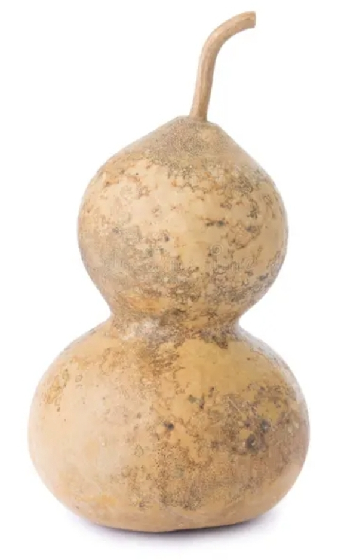

Exhibit 1: Calabashes Across Cultures
Gourds have been shaped and prepared for practical and cultural purposes in communities across the world. This exhibit compares a Hawaiian ipu with a South African calabash, examining their forms, materials, and cultural contexts.
Hawaiian Ipu
.jpg)
Object: Personal collection of Nide Stannard. Photograph credit to be confirmed.
In Hawaiian culture, ipu are prepared from gourds and have been used for different purposes, including containers and musical instruments. The photograph shows a dried, pear-shaped gourd with its stem. Its specific traditional function has not yet been established.
South African Calabash

Calabashes have been used by communities in southern Africa for storing and serving liquids, including traditional foods and beverages. This example has a rounded body, a narrow neck, and what appears to be a stopper.
Photograph and object provenance to be added.
Comparing the Objects
Both objects demonstrate the versatility of naturally grown gourds. Their different finishes, shapes, and documented uses provide opportunities to study local craftsmanship and knowledge. Similar materials do not necessarily indicate shared cultural origins or meanings.